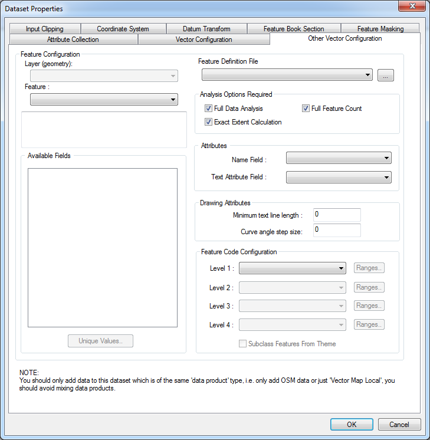

Other Vector (OGR) Configuration Panel
A general configuration panel is provided as follows:

The Data’s information can be used in the following ways:
- Two levels of subclassing are currently provided. These may incorporate class breaks if required.
- To take the feature class of each primitive from a field in the data.
- To create text primitives (with positioning information) from values stored in the data.
- To attach a name to each primitive with a value from the data.
- To control some of the drawing attributes.
The fields present in the data are shown in the list. If the panel has been invoked for a single piece of Data, the fields listed are those present in the data. If the panel has been invoked for a dataset, the fields shown are those that are common to all data in the dataset. Unique values can be obtained by pressing Unique Values.
 To open the Data’s Configuration Panel
To open the Data’s Configuration Panel
- With the Data selected, use Data | Format Configuration…
- With the Dataset selected, use Dataset | Format Configuration…
To subclass features
- In the panel, select the field that is to provide the first level of subclassing from the Level 1 list
- If a second level of subclassing is required, select the field that is to provide it from the Level 2 list
- Press OK
- The Data or Dataset affected will be re-catalogued to obtain the new feature code set according to the new settings
To apply class breaks to a feature subclass
- In the Feature Code Configuration panel, press Ranges by the appropriate feature subclass level
- Enter the number of break points required.
- Press By Range or By Distribution. The break point details will be updated automatically.
- You may edit the break points by hand. Press Refresh to update the details.
- Press Accept to apply the changes
To take the feature class of each feature from a single field
- In the panel, select the field that is to provide the feature code from the Level 1 list
- Press OK
- The Data or Dataset affected will be re-catalogued to obtain the new feature code set according to the new settings
To create text primitives from the data
- In the panel, select the field that is to provide the text to be displayed from the Text Attribute Field list
- Define the minimum line length to be considered for text placement in the Minimum line length box. This is useful when there are short polylines that are too small to have text placed along them.
- Press OK
- The Data or Dataset affected will be re-catalogued to obtain the new primitive counts according to the new settings.
To attach a name to each primitive from a field in the database
- In the panel, select the field that contains the name to be attached from the Name Field list
- Press OK
- The Data or Dataset affected will not be re-catalogued, as no new primitives or feature code will be created.
To collect attributes of features from the data for runtime queries
It is possible to import attribute data, for example the name of roads, into the map data. This can then be queried by runtime applications, for example to display information in a pop-up or tool-tip window when the curser is hovered or clicked over the map.
For information, see the Feature Attribute Collection topic.
To control some of the drawing attributes.
Define the minimum line length to be considered for text placement in the Minimum line length box.
Define the largest linear step, in degrees, along an arc when drawing curved geometry in the Curve angle step size box. If 0, a default value of 4 will be used. From MapLink Pro 8.2 onwards.